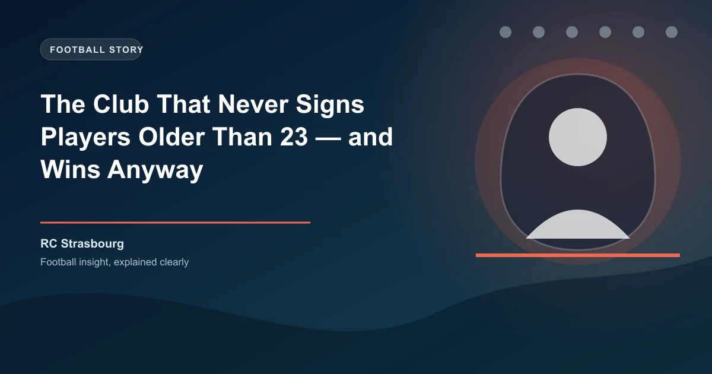

There is a club in Ligue 1 that operates by a rule so extreme it sounds like a Football Manager challenge. RC Strasbourg do not sign outfield players older than 23. Full stop. In the 2025-26 season, their entire matchday squad contained one outfield player over the age of 23. Their average squad age was 21.4 — the youngest in Europe's top five leagues by a wide margin.
And here is the part that does not fit the script: they finished 6th in Ligue 1, beat Paris Saint-Germain, went on a 14-match unbeaten run, and chased European qualification until the final weeks of the season.
Let's put that average age of 21.4 into context. In the 2025-26 season, the average squad age across the Premier League, La Liga, Serie A, Bundesliga, and Ligue 1 ranged from 25.5 to 27.8. Strasbourg were nearly four and a half years younger than the next-youngest top-flight side in Europe. Their starting XI on multiple occasions featured teenagers in seven of the ten outfield positions.
Their captain, Andrey Santos, was 20 years old. The Brazilian midfielder, on loan from Chelsea in 2024 before making the move permanent, wore the armband in a top-flight European league — and ran games from midfield like a veteran. Around him, Strasbourg fielded loanees and young signings from Chelsea's academy, players from the French second tier, and a handful of homegrown products from their own youth system.
RC Strasbourg were acquired in 2023 by BlueCo, the consortium that also owns Chelsea. The strategy was clear from day one: Strasbourg would function as a development club within the multi-club model — a place for Chelsea's brightest academy talents to get first-team minutes in a competitive European league, while also scouting and developing their own young players who could later be sold for profit.
This is not entirely new. Manchester City's City Football Group has been doing it for years with clubs like Girona, Palermo, and Troyes. The Red Bull network (Leipzig, Salzburg, Bragantino, NYRB) perfected it before them. But Strasbourg's approach is uniquely aggressive in its age ceiling.
Chelsea Loanees (2025-26): Romeo Lavia (recovery stint), Lesley Ugochukwu, Carney Chukwuemeka, David Datro Fofana, Andrey Santos (made permanent).
Young Signings: Dilane Bakwa (Bordeaux, age 21), Habib Diarra (Strasbourg academy, age 21), Sebastian Nanasi (Malmö, age 22), Emanuel Emegha (Sturm Graz, age 22).
The One Exception: Goalkeeper Djordje Petrovic (25) was over 23, and the sole experienced head in the matchday squad.
The theory is simple. Younger players are cheaper to acquire, easier to develop, have higher resale value, and — crucially — can sustain high-intensity tactical systems. Liam Rosenior's high-pressing, attacking style demands exactly the kind of relentless energy that a squad full of 19-to-22-year-olds can provide.
In 2024-25, Strasbourg finished 10th — respectable for a rebuilding project. But 2025-26 was the breakout. They opened the season with a 3-1 win over Monaco, beat PSG 2-1 at the Stade de la Meinau in October, and from November through February went unbeaten in 14 matches across all competitions. They finished 6th with 58 points, level with 5th-placed Lens and ahead of Lyon, Nice, and Marseille.
They also reached the Coupe de France semi-finals — the same competition they last won in 2019 — where they lost on penalties to the eventual champions. For a club whose entire first-team squad could fit inside Manchester City's age-restricted Under-21s, it was a stunning achievement.
| Club | League | Avg Age (2025-26) | Policy | Finish |
|---|---|---|---|---|
| RC Strasbourg | Ligue 1 | 21.4 | No outfield signings over 23 | 6th |
| FC Nordsjaelland | Danish Superliga | 22.1 | Academy-first, sell-on model | 4th |
| AZ Alkmaar | Eredivisie | 22.5 | Youngest-funded, data-driven recruitment | 3rd |
| RB Salzburg | Austrian Bundesliga | 22.3 | Red Bull scouting network | 1st |
| Athletic Bilbao | La Liga | 25.8 | Basque-only policy (not age) | 7th |
What stands out is that Strasbourg's policy is more restrictive than any of these. Nordsjaelland still sign experienced players to balance the squad. AZ Alkmaar have veteran leaders like Jordy Clasie (34). Salzburg keep a core of senior pros. Athletic Bilbao's restriction is regional, not age-related. Strasbourg's blanket age cap is unique in top-tier European football.
The short answer: in 2025-26, yes. But the model has risks. Young squads are inconsistent by nature. The same team that beat PSG in October lost to relegation-threatened Montpellier in March. Teenagers make mistakes that veterans do not. When the pressure is on — a European qualification decider, a cup semi-final — experience matters.
There is also the question of retention. If Strasbourg's young stars perform well, richer clubs will come for them. Emegha, Diarra, and Santos are already being linked with Premier League moves. The BlueCo model only works if Strasbourg can either keep their best players (unlikely if Chelsea want them) or continuously find replacements of equal quality.
But for now, Strasbourg have proven something that the football analytics community has long suspected: age is not a proxy for quality. A 20-year-old who has been coached well, given responsibility, and trusted to execute can outperform a 28-year-old journeyman on significantly lower wages.
Strasbourg's youth-heavy approach creates specific patterns that sharp bettors can exploit.
Home/Away splits: Young teams perform significantly better at home, where crowd energy offsets inexperience. Strasbourg's home record in 2025-26 was W11-D4-D4 (37 points from 17 games). Away: W5-D6-D6 (21 points). Back them on home money line, fade them on the road.
Second-half performance: Younger squads have superior fitness. Strasbourg scored 40% of their goals after the 75th minute — the highest proportion in Ligue 1. Consider live betting on Strasbourg in the final quarter.
High pressing = cards and corners: Rosenior's intense pressing system generates more corners (both for and against) and brings yellow cards. Strasbourg games averaged 11.2 corners — excellent for markets like Total Corners Over 9.5.
Inconsistency premium: Young teams are volatile. When the market overcorrects after a bad loss, there is value betting on Strasbourg to bounce back. Conversely, after a big win, the odds shorten too much — fade them next match.
Strasbourg won 74% of their points at home in 2025-26. No other top-half Ligue 1 side had a higher home dependency. If you are building accumulators, using Strasbourg at home as a banker leg (when priced fairly) is a solid approach — but avoid taking them away from the Meinau unless the odds offer clear value.
Won to nil: 8 times (all at home)
Comeback wins: 4 (trailed and won — highest in Ligue 1)
BTTS hit rate: 58% (above league average)
Over 2.5 goals: 62% of matches
Red cards received: 3 (inexperience showing)
Strasbourg are not a fluke. Their model is deliberate, data-driven, and backed by the financial muscle of a Premier League giant. Whether it sustains over multiple seasons depends on recruitment, retention, and Rosenior's ability to keep a dressing room full of teenagers focused through a long campaign. But for now, they are the most fascinating betting team in Europe — and proof that sometimes, the boldest strategy wins.
Want to follow teams like Strasbourg and find edges the bookies miss? Get free daily football predictions covering Ligue 1, Premier League, and every major European league.
Generate optimized accumulator combinations from today's AI-powered predictions. Set your target odds and get instant ticket suggestions.
Free Ticket Builder →